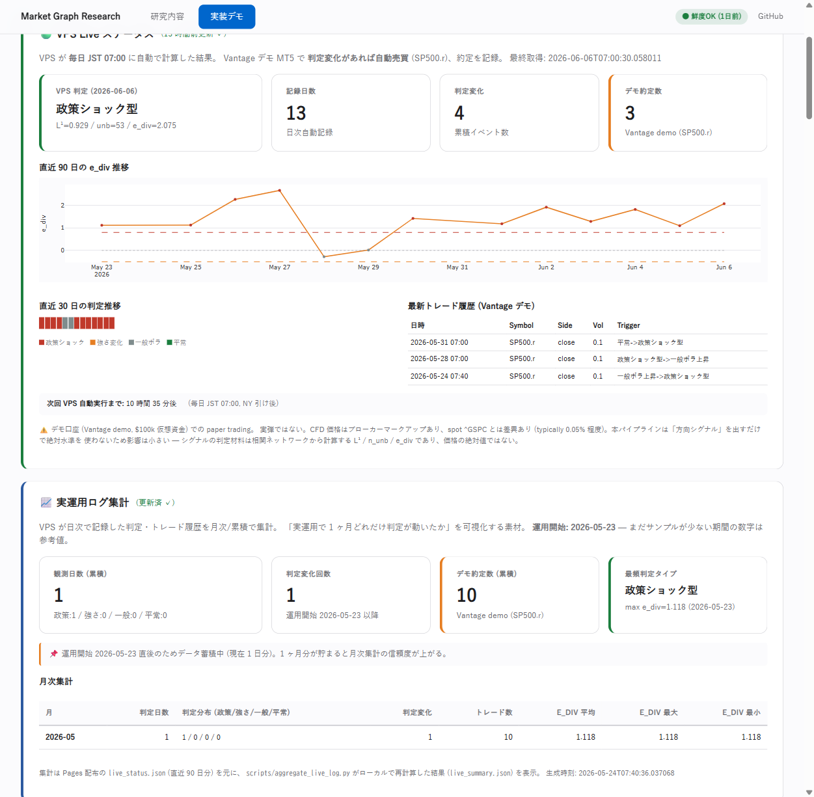

市場の「形」で
暴落は見えるか
— 銘柄のつながりを"地図"にして、2つの目で市場を見る —
この発表は上から順にスクロールしながら説明します。所要 10〜15 分。
普通、市場は「値段」で見る
でも値段だけ見てても、暴落は急に来る。
この研究は、値段じゃなく市場の"形"を見た。 銘柄同士のつながりが作る"形"が崩れる瞬間を捉えられないか?
研究の問い
「銘柄同士のつながりを"地図"にしたら、
暴落の前兆や正体が見えるんじゃないか?」
株・為替・金・原油…40個の銘柄がどう連動してるかを毎日"地図"にして、 その地図の形の変化を追いかけた。
まず、市場を"地図"にする
40銘柄を ● 点、似た動きをするペアを — 線 で結ぶ。市場が1枚の地図になる。

この地図が毎日少しずつ形を変える。その"形"を次の2つの目で測る。
道具① 「穴の量」
市場の地図にできる "穴 (輪っか)" の大きさを測る。
穴が大きい = つながりがバラバラ = 不安定 (数学では「ホモロジー」。難しくない、ただの"穴の量")
道具② 「矛盾の数」
線の + (一緒に動く) / − (逆に動く) で、"つじつまの合わない三角" を数える。
この "ねじれた三角" が多い = 市場が ねじれてる (数学では「符号付きサイクル」。要は"矛盾の数")
この2つは"別物"を見ている
穴の量
つながりの"量"
バラバラ度
矛盾の数
つながりの"符号(向き)"
ねじれ具合
片方は"量"、片方は"向き"。市場を見る2つの独立した目になる。
2つの目は連動しない ● 確実
「穴の量」と「矛盾の数」は、別々に動く (相関が弱い)。
- 10通りの条件で調べても、ずっと弱いまま
- = 片方を知っても、もう片方は分からない
- 2種類の独立した情報を市場から取り出せた

暴落の"震源"は意外な銘柄 ● 確実
地図が崩れる時、震源はニュースの主役 (米国株) じゃない。一番一貫した震源は天然ガス。

天然ガスは4暴落すべてで震源。銅は3回。中国などは暴落の種類で変わる (= 二層構造)。
「矛盾の日」に避けると暴落が浅くなる ● 確実
「矛盾が突出した日に株を売って現金にする」を試した (下図は直近5年、20年でも同じ傾向)。

✗ 儲けは増えない (ただ持つ方が上) ✓ でも暴落で沈みにくい = "守り"の道具
「それ、ただの偶然では?」を自分で潰した
都合のいい結果を疑って、自分でツッコミを入れて検証した:
- 「ただ運がいいだけ?」→ でたらめに避けた1000パターンと比較 → 勝った
- 「ただ現金多いだけ?」→ 同じ現金量でも避けるタイミングが効いてた
- 「恐怖指数(VIX)で十分?」→ VIXより良いタイミングを掴んでた
→ 偶然じゃない。未来データ(知らない期間)でも"守り"は再現した
でも「予知」ではない ◐ 正直に
検証したら、都合の悪い事実も出た。隠さず言う:
- 暴落を前もって予言してるわけじゃない
- 暴落が始まってから反応してる (ただし恐怖指数より速い)
- コロナ級の突発暴落の入口は捉えられない
正確には「予知」ではなく「VIXより速い初動検知」。 誇張せず、できること/できないことを線引きする。
論文止まりじゃない。毎日動いてる
- サーバーで毎朝7時に自動計算
- 判定 → デモ口座で自動売買 (仮想資金・実弾なし)
- 結果をホームページに自動更新
今日も動いてる → 発表当日は 実装デモタブ をライブで開く

2つの目で市場を見た
確実にできたこと
- 2つの独立した目 (穴・矛盾)
- 暴落の震源は意外な銘柄 (天然ガス)
- 暴落を浅くする"守り" (偶然でない)
正直な限界 / 今後
- 「予知」ではなく「速い反応」
- 突発暴落の入口は未対応
- 圏論での理論づけは今後
詳しくは 研究内容タブ へ。